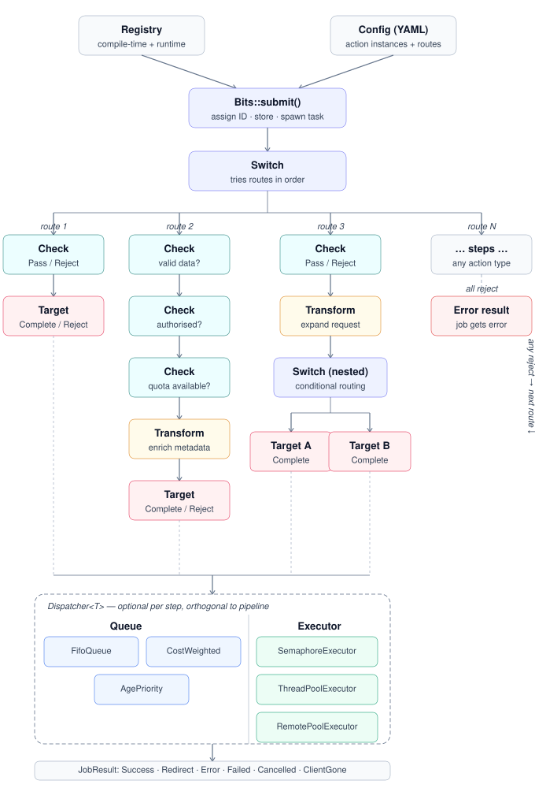

BITS Documentation
BITS (Broker for Intelligent Task Scheduling) is a policy-aware job broker that classifies, transforms, and dispatches requests across distributed infrastructure.
BITS is a Rust library. You embed it in your application, register your own actions, and build whatever API layer fits your needs (HTTP, gRPC, CLI). A built-in HTTP server is included for quick starts and as a reference implementation.
It is designed for environments where jobs vary widely in cost and duration, from millisecond checks to long-running compute tasks, and where multiple broker instances must coordinate without per-job coordination overhead.
What BITS does
A client submits a job. BITS routes it through a configurable pipeline of checks, transforms, and a target. The pipeline enforces access policy, mutates the request as needed, and dispatches to the right backend. Short jobs are handled entirely in-memory; long jobs are persisted so they survive broker restarts and can be recovered by other brokers.
How to use these docs
Getting started:
- Quick Start - build, test, and run BITS locally.
Understand the system:
- Architecture - core concepts: jobs, pipelines, actions, switches, dispatchers.
- Data Flow - how data moves through the system, with diagrams showing what each component sends and receives.
- Error Handling - typed error hierarchy, machine-readable codes, retryability hints.
Configure and extend:
- Configuration - YAML reference: registries, routes, dispatchers, top-level settings.
- Custom Actions - write checks, transforms, and targets in Rust or Python.
Integrate:
- HTTP Server API - submit jobs, poll for results, status codes, connection model.
- External Workers - pull-based remote workers with HTTP long-poll.
Operate:
- Persistence - durable storage, recovery, multi-broker coordination.
- Deployment - production setup, persistence backends, load balancing, Kubernetes.
- Troubleshooting - common issues and how to fix them.
For implementation-level design rationale, see design.md in the repository
root.
Getting Started
Prerequisites
- Rust toolchain matching the version in
rust-toolchain.toml - Cargo workspace checked out locally
Workspace layout
The repository is a Cargo workspace with these crates:
| Crate | Purpose |
|---|---|
bits | Core library: routing engine, pipeline execution, dispatcher, persistence |
bits-server | Standalone HTTP server binary wrapping the core library |
bits-py | Asyncio-native Python extension (built with maturin) |
Build and test
From the workspace root:
cargo build
cargo test
Run the hello_bits example
The fastest way to see BITS in action:
cargo run -p bits --example hello_bits
This demonstrates custom actions and conditional routing. The config is embedded
in the example source. See bits/examples/hello_bits.rs.
Write your own config
Create a file called my-config.yaml:
routes:
- default:
- target::http:
url: "http://httpbin.org/post"
This routes every job to httpbin.org which echoes back whatever you send.
Start the server:
cargo run -p bits-server -- my-config.yaml
Then submit a job from another terminal:
curl -X POST http://localhost:8080/job \
-H "Content-Type: application/json" \
-d '{"dataset": "era5", "date": "2024-01-15"}'
You’ll get back either the result directly (if the backend responds within the
poll timeout) or a 303 redirect to /job/{id} for reconnection.
Python extension
An asyncio-native Python interface is available via the bits-py crate. To build and install it
into your current Python environment:
pip install maturin aiohttp
maturin develop --manifest-path bits-py/Cargo.toml
Then run the HTTP server example:
python bits-py/examples/python_http_server.py
Or run the smaller Python examples under:
python bits-py/examples/hello_bits.py
python bits-py/examples/custom_check.py
python bits-py/examples/custom_target.py
python bits-py/examples/custom_transform.py
Preview these docs
Once mdbook is installed:
mdbook serve docs
This serves the documentation locally with live reload at http://localhost:3000.
Architecture

Jobs
A job is the unit of work in BITS. When a client submits a request, BITS creates a job carrying:
original_request- the payload exactly as submitted. Never mutated. Used as the restart point if the job needs to be recovered after a broker failure.request- a working copy of the payload, mutated by transform actions as the job flows through the pipeline.metadata- mutable annotations added by transforms during routing (for example, a computed cost value).user- identity of the submitting user.
Pipelines
Every job flows through a pipeline: an ordered list of actions. BITS evaluates each action in sequence. There are three action types:
Check
A guard condition. It evaluates the job and either passes or rejects. A rejection stops
the current route and causes the enclosing switch to try the next named route. Checks do not
mutate the job.
Examples: check::match, check::has_license
Transform
A mutation step. It modifies the job (for example, expanding request parameters or computing a cost), then continues through the pipeline.
Examples: transform::metkit_expansion, transform::cost
Target
The terminal dispatch step. It sends the job to a backend and returns a result. Every route must end with a target.
Examples: target::http, target::remote
Note: The core
bitscrate ships onlytarget::httpandtarget::remote. Domain-specific actions (match,has_license,metkit_expansion,schedule_released, etc.) are provided by the host application. Register your own actions usingregister_action!. See Custom Actions.
Switch
A switch contains named routes and tries them in order, returning the result of the first
route whose checks all pass. This is the branching primitive. Use it to express conditional
routing such as privileged versus public access paths. Switches can be nested inside routes.
When all routes reject, the switch collects rejection reasons from non-silent actions and returns
them to the user. Silent rejections (route-selection checks like match) are omitted; non-silent
rejections (validation checks like schedule_released) are included so the user understands why
a matched route still failed.
Dispatcher
Any action step (check, transform, or target) can have an optional dispatcher that controls ordering and concurrency before the action runs.
A dispatcher has two concerns:
- Queue: controls which job runs next (
fifo,cost_weighted, orage_priority). The queue only storesJobmetadata; it knows nothing about work futures or result types. - Executor: owns the scheduling loop that pulls jobs from the queue and runs the associated
work (
async_pool,thread_pool, orremote_pool).
Each executor implements its own scheduling model:
- Async pool - N Tokio tasks (one per concurrency slot) each loop on
queue.dequeue()and run work inline. - Thread pool - dedicated OS threads each call
queue.dequeue()directly, run work viablock_on, and send results back. - Remote pool - the
/workHTTP handler callsqueue.dequeue()directly when a remote worker polls, so external workers pull work at their own pace with no intermediate feeder task.
This makes scheduling behavior explicit at the step level rather than a global setting. See Configuration for dispatcher syntax and options.
Background threads and tasks
BITS starts background threads and async tasks at startup and per-job. Operators should be aware of these when reasoning about resource usage, process behaviour on shutdown, and interaction with the host’s thread model.
Tokio async runtime
The bits-server binary uses #[tokio::main] with the default multi-thread scheduler. Tokio
spawns one worker thread per logical CPU. These are OS threads managed entirely by Tokio and
are not counted in the items below.
Started at Bits::from_config() - always
Completed-job sweeper (1 OS thread)
A single std::thread::spawn thread that wakes every 5 seconds (configurable via
bits.job_cleanup_interval_ms) and removes finished jobs from the in-memory map once no client
is polling them. A real blocking OS thread is used deliberately so it cannot interfere with the
Tokio scheduler even if it is saturated.
Started at Bits::from_config() - only when persistence is configured
Broker lease heartbeat (1 Tokio task) A long-running async task that periodically upserts this broker’s lease record in the persistence store. It renews at half the configured lease TTL (minimum 100 ms between renewals). This task is the mechanism by which other brokers determine that this instance is alive. See Broker Leases.
Started per dispatcher - at config parse time
Each action step with a dispatcher: block starts background workers when the configuration is
loaded. The executor owns the scheduling loop. The number and kind of workers depend on the
executor type configured.
Async pool scheduler (N Tokio tasks, if executor: async_pool)
One Tokio task per concurrency slot. Each task loops: dequeue a job from the queue, run
the work future inline, send the result back, then dequeue the next. Concurrency is controlled
by the number of tasks.
Cost-weighted queue worker (1 Tokio task, if queue: cost_weighted)
Maintains the priority heap and services dequeue requests in cost order. Not started when
queue: fifo is used. FIFO uses a plain channel with no background task.
Thread pool workers (N OS threads, if executor: thread_pool)
One OS thread per concurrency unit. Each thread calls queue.dequeue() directly (via
block_on), resolves the pending work, and runs it on that OS thread. Used to isolate
CPU-bound or blocking work from the async scheduler. Not started unless executor: thread_pool
is explicitly configured.
Remote pool HTTP server + heartbeat reaper (2 Tokio tasks, if executor: remote_pool)
One task runs an axum HTTP server on the configured bind address (default 0.0.0.0:9001).
The /work endpoint calls queue.dequeue() directly when a remote worker long-polls. There
is no intermediate feeder task. A second task scans in-progress jobs every
heartbeat_timeout / 2 seconds and evicts any worker that has stopped sending heartbeats.
Started when executor: remote_pool is configured (or when target::remote is used, which
implies it). When routes are added programmatically via add_route(), remote pools are
registered during that call and the worker server listener is started automatically.
For the wire protocol and worker implementation contract, see External Workers.
Started per submitted job
Job dispatch task (1 Tokio task per job)
Runs the full pipeline for one job. If bits.persist_after_ms is configured, this task also
handles the persistence threshold: it races the pipeline against a timer, and if the timer fires
first it writes the durable job record before continuing to wait for the pipeline to complete.
There is no separate timer task. The threshold logic lives inside this task via tokio::select!.
Summary
| Background worker | Kind | Count | Started when |
|---|---|---|---|
| Completed-job sweeper | OS thread | 1 per Bits instance | Always, at startup |
| Broker lease heartbeat | Tokio task | 1 per Bits instance | At startup, if persistence configured |
| Async pool scheduler | Tokio tasks | N per async_pool executor | At config parse, per dispatcher block |
| Cost-weighted queue worker | Tokio task | 1 per cost_weighted queue | At config parse, if queue: cost_weighted |
| Thread pool OS workers | OS threads | N per thread_pool executor | At config parse, if executor: thread_pool |
| Remote pool HTTP server | Tokio task | 1 per remote_pool executor | At config parse, or on first add_route() with remote pools |
| Remote pool heartbeat reaper | Tokio task | 1 per remote_pool executor | At config parse, or on first add_route() with remote pools |
| Job dispatch + persist timer | Tokio task | 1 per submitted job | Per Bits::submit() |
Multi-broker cooperation
In production, multiple broker instances run behind a load balancer. Each broker holds an in-memory shard of the dispatcher state and a broker lease record in durable storage.
When a poll request arrives at a broker that does not own the job:
- The broker parses the owner from the job ID.
- It resolves the owner’s endpoint from broker lease records.
- It proxies the poll internally to the owner.
- If the owner lease is missing or expired, it may claim and recover the job from durable storage.
For full details, see the Persistence section.
For implementation-level detail and design rationale, see design.md in the repository root.
Data Flow
This page explains how data moves through BITS, from client submission to backend dispatch and back. Understanding the data flow helps you debug routing issues, write custom actions, and reason about what each component sees.
The life of a job
When a client submits a request, BITS creates a Job and routes it through a pipeline of checks, transforms, and a terminal target:
sequenceDiagram
participant C as Client
participant B as BITS Broker
participant T as Backend
C->>B: POST /job {"class":"od","date":"2024-01-15"}
Note over B: Create Job<br/>id = broker-1-abc~def<br/>original_request = frozen copy<br/>request = working copy
Note over B: Spawn pipeline task
Note over B: Pipeline:<br/>check → pass<br/>transform → mutate request<br/>target → dispatch
B->>T: POST http://backend/api<br/>Body: job.request (after transforms)
T-->>B: 200 OK + result bytes
Note over B: Write result to Job<br/>Notify waiting pollers
B-->>C: 200 OK (stream body)
Key points:
submit()is non-blocking. It creates the Job and spawns a background task, returning immediately with aJobHandle.poll()is a long-poll. It waits for the result or times out.- The pipeline runs in a separate async task from the poll.
- Results are delivered via a shared
Notify. The poll task sleeps until the pipeline writes the result and wakes it.
What the backend receives
When target::http dispatches a job, it takes the job’s request field and
POSTs it as the JSON body:
POST /api HTTP/1.1
Host: my-backend
Content-Type: application/json
{"class": "od", "date": "2024-01-15"}
The request body is exactly job.request, the working copy after any
transforms. Nothing is added or wrapped. HTTP headers like Content-Type
are set automatically by the HTTP client.
What transforms do to the data
Transforms can mutate request, metadata, or both. Each transform in the
pipeline sees the changes from the previous one:
flowchart TD
A["Client submits<br/>{class: od, param: 2t/msl}"]
A --> B["Transform: coercion"]
B --> C["request becomes<br/>{class: od, param: [2t, msl]}"]
C --> D["Transform: metkit_expansion"]
D --> E["metadata becomes<br/>{metkit_expanded: true}"]
E --> F["Target dispatches request to backend"]
The original_request is never touched. It stays as the client submitted
it. This frozen copy is used to restart the job from scratch if the broker
crashes and another broker recovers it.
Two HTTP servers, two data paths
BITS runs two independent HTTP servers for different audiences:
graph LR
subgraph "BITS Broker"
subgraph "Client Server :8080"
A1["POST /job"]
A2["GET /job/{id}"]
end
subgraph "Worker Server :9001"
B1["GET /mars/work"]
B2["POST /mars/complete/..."]
end
end
Users["API Clients"] --> A1
Users --> A2
Workers["External Workers"] --> B1
Workers --> B2
Client server (port 8080): Receives job submissions from end users and
serves poll results. Configured under server: in the YAML.
Worker server (port 9001): Serves work to external pull-based workers.
Configured under bits.worker_server: in the YAML. Only started when
target::remote is used.
Push model: target::http
BITS calls the backend:
sequenceDiagram
participant B as BITS Broker
participant S as Backend Service
B->>S: POST http://backend/api<br/>Body: job.request (JSON)
alt 2xx
S-->>B: Body: result data
Note over B: JobResult::Success { stream }
else 4xx (route rejection)
S-->>B: Body: reason
Note over B: TargetResult::Reject<br/>Switch tries next route
else 5xx / transport error
S-->>B: failure
Note over B: JobResult::Failed { reason }
end
A 4xx from the backend does not immediately fail the job. It becomes a
route rejection. If there are more routes in the switch, the next route is
tried. Only if all routes reject does the client see the rejection.
Pull model: target::remote
Workers call BITS:
sequenceDiagram
participant W as Worker
participant B as BITS Broker :9001
W->>B: GET /mars/work?timeout_ms=30000
Note over B: Dequeue job from queue
B-->>W: 200 {job_id, request, user, metadata}
loop Every N seconds
W->>B: POST /mars/heartbeat/{job_id}
B-->>W: 200 OK
end
W->>B: POST /mars/complete/data/{job_id}<br/>Body: result bytes
B-->>W: 200 OK
Note over B: Result delivered to waiting poller
When a worker receives a job, the response body contains:
{
"job_id": "broker-1-abc123~def456",
"request": {"class": "od", "param": ["2t", "msl"]},
"user": {"name": "alice", "group": "research"},
"metadata": {"cost": 42, "metkit_expanded": true}
}
requestis the working copy after transforms.userandmetadataare passed through as-is.job_idis used for heartbeats and completion calls.
If the worker stops sending heartbeats, the broker times out the entry and the job fails. It is not automatically re-queued.
Multi-broker data flow
When multiple brokers run behind a load balancer, a poll might land on a different broker than the one processing the job:
sequenceDiagram
participant C as Client
participant LB as Load Balancer
participant A as Broker A
participant B as Broker B
participant S as NATS/TiKV
C->>LB: POST /job
LB->>A: forward
A->>A: Submit + dispatch job
A->>S: Persist (after threshold)
Note over A: Broker A crashes
C->>LB: GET /job/{id}
LB->>B: forward
B->>S: Check A's lease → expired
B->>S: Claim job (atomic CAS)
B->>B: Restore from original_request
B->>B: Re-dispatch through pipeline
B-->>C: Result
If Broker A is still alive, Broker B proxies the poll instead of claiming:
sequenceDiagram
participant C as Client
participant B as Broker B
participant A as Broker A
C->>B: GET /job/{id}
B->>B: A owns this, lease active
B->>A: Proxy poll to A's internal URL
A-->>B: Result
B-->>C: Result
If the proxy fails (A is unreachable but lease hasn’t expired), B returns
Pending to the client. It does not trigger a reclaim while the lease is
active.
The persistence threshold
Not all jobs are persisted. Fast jobs stay entirely in memory:
flowchart TD
A[Job submitted] --> B{Timer: persist_after_ms}
B -->|Job finishes first| C[No persistence - fast path]
B -->|Timer fires first| D[Write record to store]
D --> E[Job finishes]
E --> F[Delete record from store]
Only original_request, user, metadata, and created_at are persisted.
The working request (after transforms) is not stored. On recovery, the
job is rebuilt from original_request and transforms run again.
The reconnect window
Between polls, a 5-second reconnect window keeps the job alive:
sequenceDiagram
participant C as Client
participant B as BITS Broker
C->>B: POST /job
Note over B: Job running...
B-->>C: 303 /job/{id}, Retry-After: 0
Note over C: Reconnect window: 5s
C->>B: GET /job/{id}
Note over B: Still running...
B-->>C: 303 /job/{id}
C->>B: GET /job/{id}
Note over B: Job finished!
B-->>C: 200 OK (result body)
If the client disconnects mid-poll, the ConnectedGuard extends the
reconnect deadline automatically. If the client never comes back, the
sweeper eventually removes the completed job from memory.
Error Handling
Every error from the BITS library is typed and matchable. Callers can distinguish YAML syntax errors from missing config fields from persistence failures, programmatically and without string parsing.
Error hierarchy
BitsError
├── Config(ConfigError)
│ ├── Yaml(serde_yaml::Error)
│ ├── Validation { path, reason }
│ ├── MissingField { path }
│ ├── FeatureDisabled { path, feature }
│ ├── Decode { path, target, source }
│ └── PersistenceInit { path, backend, reason }
├── Routing(RoutingError)
│ ├── InvalidRoute { route, reason }
│ ├── InvalidAction { route, action, reason }
│ └── MissingTarget { route }
├── Persistence(DbError)
│ ├── Conflict(String)
│ └── Backend(String)
├── Action(ActionError)
│ ├── NetworkError(String)
│ ├── QueueFull(String)
│ ├── Timeout(String)
│ ├── ConfigError(String)
│ ├── AuthError(String)
│ ├── ResourceError(String)
│ ├── Cancelled
│ └── ClientGone
└── WorkerServer(WorkerServerError)
├── Bind { address, reason }
└── PoolRegistration { name, reason }
BitsError, ConfigError, RoutingError, and WorkerServerError are
#[non_exhaustive], so new variants can be added without breaking your match
arms (as long as you have a wildcard). ActionError and DbError are not
yet #[non_exhaustive] but may become so in a future release.
Error codes
Every error has a stable machine-readable code() string. These codes are
part of the public API contract and won’t change between releases:
| Code | Variant | Description |
|---|---|---|
CONFIG_YAML_SYNTAX | ConfigError::Yaml | Invalid YAML syntax. |
CONFIG_VALIDATION | ConfigError::Validation | Field value is invalid. |
CONFIG_MISSING_FIELD | ConfigError::MissingField | Required field is absent. |
CONFIG_FEATURE_DISABLED | ConfigError::FeatureDisabled | Persistence needs a feature flag. |
CONFIG_DECODE | ConfigError::Decode | Action config deserialization failed. |
CONFIG_PERSISTENCE_INIT | ConfigError::PersistenceInit | Can’t connect to NATS/TiKV. |
ROUTING_INVALID_ROUTE | RoutingError::InvalidRoute | Route definition is invalid. |
ROUTING_INVALID_ACTION | RoutingError::InvalidAction | Unknown action type or namespace. |
ROUTING_MISSING_TARGET | RoutingError::MissingTarget | Route doesn’t end with a target. |
PERSISTENCE_CONFLICT | DbError::Conflict | CAS contention during claim. |
PERSISTENCE_BACKEND | DbError::Backend | Persistence store error. |
ACTION_NETWORK | ActionError::NetworkError | Upstream call failed. |
ACTION_QUEUE_FULL | ActionError::QueueFull | Dispatcher queue at capacity. |
ACTION_TIMEOUT | ActionError::Timeout | Operation timed out. |
ACTION_CONFIG | ActionError::ConfigError | Action misconfigured. |
ACTION_AUTH | ActionError::AuthError | Missing credentials. |
ACTION_RESOURCE | ActionError::ResourceError | Resource unavailable. |
ACTION_CANCELLED | ActionError::Cancelled | Job was cancelled. |
ACTION_CLIENT_GONE | ActionError::ClientGone | Client disconnected. |
WORKER_BIND | WorkerServerError::Bind | Worker server port in use. |
WORKER_POOL | WorkerServerError::PoolRegistration | Pool registration failed. |
Retryability
Some errors are caused by temporary conditions, such as a network blip, a busy queue, two brokers racing to claim the same job. If you retry the same operation a moment later, it will likely succeed. These are retryable.
Other errors are caused by something fundamentally wrong: invalid config, a misspelled action name, a cancelled job. No amount of retrying will fix them. The operator or developer needs to change something first. These are not retryable.
is_retryable() tells you which category an error falls into, so your code
can decide automatically:
#![allow(unused)]
fn main() {
match bits.poll(&job_id, Some(Duration::from_secs(30))).await {
PollOutcome::Ready(result) => handle(result),
PollOutcome::Pending { .. } => { /* poll again */ }
PollOutcome::NotFound => { /* job gone, don't retry */ }
}
// For startup errors:
match Bits::from_config(config) {
Ok(bits) => run(bits),
Err(e) if e.is_retryable() => {
// Transient - back off and retry.
// Examples: NATS connection timeout, CAS contention,
// upstream network error, queue at capacity.
eprintln!("Transient error [{}]: {e}, retrying...", e.code());
tokio::time::sleep(Duration::from_secs(1)).await;
// retry...
}
Err(e) => {
// Permanent - retrying won't help, fix the cause.
// Examples: invalid YAML, missing config field,
// feature not compiled, bad credentials.
eprintln!("Fatal error [{}]: {e}", e.code());
std::process::exit(1);
}
}
}Which errors are retryable?
| Error | Retryable | Why |
|---|---|---|
NetworkError | Yes | Upstream call failed - might succeed on retry. |
Timeout | Yes | Operation timed out - might complete with longer timeout. |
QueueFull | Yes | Dispatcher queue at capacity - space may free up. |
DbError::Conflict | Yes | CAS contention during claim - another broker won the race, try again. |
DbError::Backend | Yes | Persistence store error - typically connection issues. |
ConfigError::* | No | Config is broken - fix the YAML and restart. |
RoutingError::* | No | Route definition is wrong - fix the config. |
AuthError | No | Missing credentials - fix the user context. |
Cancelled | No | Job was explicitly cancelled - don’t retry cancelled work. |
ClientGone | No | Client disconnected - nobody to deliver the result to. |
WorkerServerError::* | No | Port binding failed - fix the config or free the port. |
Retryability in HTTP responses
When building an HTTP API on top of BITS, use is_retryable() to set the
appropriate status code and headers:
#![allow(unused)]
fn main() {
if err.is_retryable() {
// 503 Service Unavailable + Retry-After
(StatusCode::SERVICE_UNAVAILABLE, [("Retry-After", "1")])
} else {
// 500, no retry
(StatusCode::INTERNAL_SERVER_ERROR, [])
}
}Matching on errors
#![allow(unused)]
fn main() {
use bits::{Bits, BitsError, ConfigError, RoutingError};
match Bits::from_config(config) {
Ok(bits) => { /* ready */ }
// YAML is broken
Err(BitsError::Config(ConfigError::Yaml(e))) => {
eprintln!("Fix your YAML syntax: {e}");
}
// Feature not compiled
Err(BitsError::Config(ConfigError::FeatureDisabled { feature, .. })) => {
eprintln!("Build with: cargo build --features {feature}");
}
// Can't connect to persistence store
Err(BitsError::Config(ConfigError::PersistenceInit { backend, reason, .. })) => {
eprintln!("{backend} is down: {reason}");
}
// Route validation failed
Err(BitsError::Routing(RoutingError::MissingTarget { route })) => {
eprintln!("Route '{route}' needs a target at the end");
}
// Anything else
Err(e) => {
eprintln!("Error [{}]: {e}", e.code());
eprintln!("Retryable: {}", e.is_retryable());
}
}
}Config error paths
Config errors include the YAML field path that caused the failure:
config: bits.persistence.broker_lease_ttl_secs: must be a finite number >= 1.0
config: bits.persistence.url: must not be empty
config: bits.persistence.type: feature 'nats' not enabled
config: bits.persistence: nats initialization failed: connection refused
This makes it easy to pinpoint the exact field without guessing.
Error propagation for library users
BitsError implements std::error::Error, so it works with ? in any
function that returns Box<dyn Error> or anyhow::Result:
#![allow(unused)]
fn main() {
// Works in anyhow context
fn setup() -> anyhow::Result<Bits> {
Ok(Bits::from_config(config)?)
}
// Works in Box<dyn Error> context
fn setup() -> Result<Bits, Box<dyn std::error::Error>> {
Ok(Bits::from_config(config)?)
}
// Best: use the typed error directly
fn setup() -> Result<Bits, BitsError> {
Bits::from_config(config)
}
}Forward compatibility
All error enums use #[non_exhaustive]. To handle this safely:
#![allow(unused)]
fn main() {
match err {
BitsError::Config(_) => { /* handle config errors */ }
BitsError::Routing(_) => { /* handle routing errors */ }
_ => { /* catch-all for future variants */ }
}
}The code() strings are stable across releases. You can use them in
monitoring dashboards, alerting rules, and log aggregation queries:
bits_errors_total{code="CONFIG_YAML_SYNTAX"}
bits_errors_total{code="PERSISTENCE_BACKEND"}
Configuration
BITS configuration is a single YAML file with typed registries
(checks, transforms, targets) and an optional routes section.
Routes can be defined statically in the YAML or added programmatically at runtime via
Bits::add_route(). This is useful when the host application manages its own collection
or tenant model and maps each to a separate BITS route. See
Programmatic Routes below.
Registries
Registries hold named, reusable action definitions. Each entry has a type: key that
identifies the action, plus any action-specific fields.
checks:
is_privileged:
type: match
class: od
transforms:
expand:
type: metkit_expansion
expand_parameters: true
targets:
backend:
type: http
url: "http://my-service/api"
Named registry entries are referenced in routes using the check::, transform::, and
target:: prefixes. This makes the type of each step visible in the route and ensures shared
resources (such as a target with a dispatcher) are the same instance in memory.
The examples in this page use domain-specific actions (
match,metkit_expansion,has_role,schedule_released, etc.) that would be registered by the host application. The corebitslibrary ships onlytarget::httpandtarget::remote. See Custom Actions.
Routes
The routes section is optional. When present, it defines ordered pipelines of action steps
that are loaded at config parse time. Steps reference named registry entries or define actions
inline. When omitted, routes must be added programmatically via add_route(). See
Programmatic Routes.
routes:
- default:
- transform::expand # reference a named registry entry
- switch:
- privileged:
- check::is_privileged
- target::backend
- public:
- check::match: # inline action - no registry entry needed
class: ea
- target::backend
A switch tries its named routes in order and returns the result of the first route whose checks
all pass. Routes may be nested.
Inline actions
Actions can be defined directly in a route without a registry entry:
- check::match:
class: od
Inline actions are not reusable. Each occurrence is an independent instance. Use the registry when you want to share an action (and its dispatcher) across multiple routes.
Role-based access control
has_role checks that the authenticated user belongs to a listed realm and holds at least one of
the allowed roles for that realm. The roles field is a map of realm name to allowed role lists:
- check::has_role:
roles:
ecmwf:
- admin
- data_access
cds:
- viewer
A user passes if their realm appears in the map and they hold any of the roles listed under that realm. Users whose realm is not listed, or who lack a matching role, are rejected.
Rejections use a generic "insufficient permissions" message to avoid leaking realm/role details.
Two distinct WARN-level log messages help operators diagnose failures:
"user realm not listed in allowed realms": the user’s realm doesn’t appear in therolesmap."realm matched but user lacks a required role": the realm matched but the user holds none of the allowed roles.
Dispatcher
Any action step (check, transform, or target) can include a dispatcher: section to control
queuing and concurrency.
For named registry entries, dispatcher: is nested inside the entry alongside type::
targets:
backend:
type: http
url: "http://my-service/api"
dispatcher:
queue: cost_weighted
executor:
type: async_pool
concurrency: 8
For inline steps, dispatcher: is a sibling key in the action mapping:
routes:
- default:
- target::http:
url: "http://my-service/api"
dispatcher:
queue: cost_weighted
executor:
type: async_pool
concurrency: 8
Dispatcher fields
| Field | Values | Default |
|---|---|---|
queue | fifo, cost_weighted, age_priority | fifo |
executor.type | async_pool, thread_pool, remote_pool | async_pool |
executor.concurrency | positive integer | 256 |
executor.concurrencyapplies toasync_poolandthread_poolonly.remote_pooldoes not accept a concurrency setting; parallelism is determined by how many workers are polling.cost_weightedordering requires ametadata["cost"]value set by a prior transform.age_priorityages waiting jobs into service while still making larger-cost jobs wait longer to gain queue priority.thread_pooloffloads work to dedicated OS threads. Use this for CPU-bound or blocking work.remote_poolis only valid withtarget::remoteand is auto-inserted when using that target type. Any other combination is rejected at config parse time.- For the remote worker HTTP API and worker lifecycle, see External Workers.
Silent rejections
When all routes in a switch reject a job, the error returned to the user includes rejection
reasons from actions that are not silent. Route-selection checks (like match) are silent by
default, so their rejections are internal routing decisions. Validation checks (like
schedule_released) are not silent, so their rejections should reach the user.
Each action sets its own default. You can override per-step with the silent key:
For named registry entries:
checks:
schedule:
type: schedule_released
path: /etc/schedule.xml
silent: true # override: suppress this check's rejections
For inline steps:
routes:
- default:
- check::match:
class: od
silent: false # override: surface this match check's rejections
- target::backend
Top-level bits settings
The optional bits: section configures broker identity and persistence policy:
bits:
persist_after_ms: 10000 # persist jobs still in-flight after this many milliseconds
poll_timeout_ms: 30000 # validation only: should match your API layer's poll timeout
persist_guard_ms: 1000 # extra margin for the persist_after + guard < poll_timeout check
| Field | Purpose |
|---|---|
persist_after_ms | Threshold before a job is written to durable storage. Jobs completing before this threshold are never persisted. |
poll_timeout_ms | Used for startup validation only (persist_after_ms + persist_guard_ms < poll_timeout_ms). Set this to match whatever your API layer uses for polling. The built-in HTTP server’s actual poll timeout is server.poll_timeout_ms. Library users pass a timeout per Bits::poll() call. |
persist_guard_ms | Extra margin in the validation inequality. Ensures persistence has time to complete before the client poll would time out. |
Persistence requires a storage backend configured under bits.persistence.
Two backends are supported:
- NATS JetStream KV (
type: nats): build with--features nats - TiKV (
type: tikv): build with--features tikv
If a persistence backend is configured but the crate is built without the
matching feature, startup fails immediately with a CONFIG_FEATURE_DISABLED
error. See Deployment for backend setup details.
Programmatic Routes
When the host application manages its own routing model (e.g. per-collection or per-tenant
routing), routes can be added after config load via Bits::add_route().
The YAML file still defines registries (checks, targets, transforms), bits: settings, and
optionally a worker_server: block, but the routes section can be omitted entirely.
add_route
Bits::add_route() parses a route YAML fragment against the already-loaded registries and
returns a RouteHandle:
#![allow(unused)]
fn main() {
let bits = Bits::from_config(config)?;
// Parse a route from a YAML value. Actions that reference named
// registry entries (e.g. target::backend) share the same Arc instances.
let handle: RouteHandle = bits.add_route("my_collection", &route_yaml_value)?;
// Submit a job via the named route handle
let job_handle = handle.submit(Job::new(json!({"class": "od"})));
}RouteHandle
add_route() returns a RouteHandle, an opaque handle the host application uses to submit
jobs to a specific route. The host keeps the mapping from its own collection/tenant names to
route handles.
Shared resources
Routes added via add_route() share the same action registries and target Arcs as routes
defined in the YAML. This means a named target like target::backend with a dispatcher is the
same instance across all routes, so jobs from any route contend on the same concurrency pool and
queue.
Worker server
When using target::remote with programmatic routes, remote pool targets may be registered
during add_route(), after the initial config parse. The worker server is started
automatically inside add_route() whenever remote pools have been registered. The call is
idempotent. Once the listener is bound, subsequent add_route() calls skip re-binding.
No explicit worker server management is needed from the host application.
Writing Custom Actions
Actions are the extension point for adding new behaviour to BITS pipelines. You can add custom checks, transforms, and targets in Rust or Python. Both share the same three action types, the same YAML registration model, and the same job data model.
The three action types
| Type | Method | Returns | Purpose |
|---|---|---|---|
CheckAction | evaluate(job) | Pass or Reject | Guard: pass or reject the current route. Does not mutate the job. |
TransformAction | execute(job) | Continue or Reject | Mutate job.request / job.metadata, then continue. |
TargetAction | dispatch(job) | Success, Redirect, Error, or Reject | Terminal dispatch: send the job and return a result. |
A Reject from any action type stops the current route and causes the enclosing switch to
try the next named branch. Each Reject carries a silent flag: when silent is true (the
default for route-selection checks), the rejection reason is not shown to the user. When silent
is false (the default for validation checks like schedule_released), the reason is included in
the error if all routes fail. The silent config key on any action step can override this default.
The Job object
All actions receive a job. The fields relevant to action authors:
| Field | Writable | Description |
|---|---|---|
id | No | Unique job identifier ({broker_id}~{uuid}). |
request | Transform only | Working request payload. Mutated by transforms; read by checks and targets. |
original_request | No | Snapshot of the request as submitted. Used as restart point on recovery. Never modify this. |
metadata | Transform only | Pipeline-internal annotations (cost, roles, license, etc.). Written by transforms; read by checks, targets, and dispatchers. |
user | No | Identity of the submitting user. |
Check action
A check reads the job and returns Pass or Reject.
#![allow(unused)]
fn main() {
use bits::actions::{ActionError, CheckAction, CheckResult};
use bits::Job;
use async_trait::async_trait;
use serde::{Deserialize, Serialize};
#[derive(Debug, Serialize, Deserialize)]
pub struct HasLicense {
pub license: String,
}
#[async_trait]
impl CheckAction for HasLicense {
async fn evaluate(&self, job: &Job) -> Result<CheckResult, ActionError> {
match job.metadata.get("license").and_then(|v| v.as_str()) {
Some(l) if l == self.license => Ok(CheckResult::Pass),
Some(l) => Ok(CheckResult::Reject {
reason: format!("license '{}' does not match required '{}'", l, self.license),
silent: true,
}),
None => Ok(CheckResult::Reject {
reason: "no license field found".to_string(),
silent: true,
}),
}
}
}
bits::register_action!(check, "has_license", HasLicense);
}YAML
checks:
needs_open_license:
type: has_license
license: open-data
Transform action
A transform mutates job.request and/or job.metadata, then returns Continue.
#![allow(unused)]
fn main() {
use bits::actions::{ActionError, TransformAction, TransformResult};
use bits::Job;
use async_trait::async_trait;
use serde::{Deserialize, Serialize};
#[derive(Debug, Serialize, Deserialize)]
pub struct ComputeCost {
pub cost_field: String,
}
#[async_trait]
impl TransformAction for ComputeCost {
async fn execute(&self, job: &mut Job) -> Result<TransformResult, ActionError> {
let cost = job.request
.get(&self.cost_field)
.and_then(|v| v.as_f64())
.unwrap_or(1.0);
let metadata = job.metadata.as_object_mut()
.ok_or_else(|| ActionError::ConfigError("metadata is not an object".into()))?;
metadata.insert("cost".to_string(), serde_json::json!(cost));
Ok(TransformResult::Continue)
}
}
bits::register_action!(transform, "compute_cost", ComputeCost);
}YAML
transforms:
cost:
type: compute_cost
cost_field: volume_mb
Target action
A target dispatches the job and returns one of these outcome types:
In Rust:
| Return | Meaning |
|---|---|
TargetResult::Complete(JobResult::Success { stream, content_type, size }) | Job completed with a streaming body. |
TargetResult::Complete(JobResult::Redirect { location, message }) | Client should follow a redirect URL. |
TargetResult::Complete(JobResult::Error { message }) | Job-level error (invalid request, validation failure). Terminal, not retried. |
TargetResult::Reject { reason, silent } | This route cannot handle the job. The switch tries the next branch. |
Err(ActionError::NetworkError(...)) | Transient upstream failure. |
Err(ActionError::ResourceError(...)) | Non-transient resource issue. |
In Python:
| Return | Meaning |
|---|---|
Success(body, content_type="...") | Job completed. body is bytes or str (auto-encoded UTF-8). |
Success.json(value) | Convenience: serializes a Python dict/list as application/json. Equivalent to Success(json.dumps(value).encode(), content_type="application/json"). |
Redirect(location, message="") | Client should follow a redirect URL. |
Error(message) | Job-level error (invalid request, auth failure, etc.). |
Reject(reason) | This route cannot handle the job. The switch tries the next branch. |
When using target::remote, an external worker returns outcomes by posting
to the /{pool}/complete/... endpoints. See External Workers.
#![allow(unused)]
fn main() {
use bits::actions::{ActionError, TargetAction, TargetResult};
use bits::result::JobResult;
use bits::Job;
use async_trait::async_trait;
use bytes::Bytes;
use serde::{Deserialize, Serialize};
#[derive(Debug, Serialize, Deserialize)]
pub struct MyHttpTarget {
pub url: String,
}
#[async_trait]
impl TargetAction for MyHttpTarget {
async fn dispatch(&self, job: &Job) -> Result<TargetResult, ActionError> {
let client = reqwest::Client::new();
let response = client
.post(&self.url)
.json(&job.request)
.send()
.await
.map_err(|e| ActionError::NetworkError(e.to_string()))?;
if response.status().is_client_error() {
return Ok(TargetResult::Reject {
reason: format!("upstream rejected: {}", response.status()),
silent: true,
});
}
if !response.status().is_success() {
return Err(ActionError::NetworkError(format!(
"upstream error: {}", response.status()
)));
}
let body = Bytes::from(
response.bytes().await.map_err(|e| ActionError::NetworkError(e.to_string()))?
);
let size = body.len() as i64;
let stream = Box::new(futures::stream::iter(vec![Ok::<_, std::io::Error>(body)]));
Ok(TargetResult::Complete(JobResult::Success {
content_type: "application/octet-stream".to_string(),
size,
stream,
}))
}
}
bits::register_action!(target, "my_http", MyHttpTarget);
}YAML
targets:
my_backend:
type: my_http
url: "http://my-service/api"
Registration
register_action! macro
Call the macro at the bottom of the same file as the implementation. It uses the
inventory crate for compile-time distributed registration. No
central file needs to be edited.
#![allow(unused)]
fn main() {
bits::register_action!(check, "my_check", MyCheck);
bits::register_action!(transform, "my_transform", MyTransform);
bits::register_action!(target, "my_target", MyTarget);
}The macro deserialises the YAML config block into your struct via serde_json. Your struct must
derive Deserialize. All YAML keys except type, dispatcher, and silent are passed as
config fields.
Crate setup
Actions can live in any crate that depends on bits. A minimal Cargo.toml:
[dependencies]
bits = { path = "../bits" }
async-trait = "0.1"
serde = { version = "1", features = ["derive"] }
serde_json = "1"
inventory = "0.3"
Make sure the crate is actually linked into your binary. inventory relies on
static initialisation, which only fires if the crate is linked. If the action
crate is not a direct dependency of the binary, the linker may drop it
entirely and your actions won’t be registered.
To force linkage, add an explicit use in your binary’s main.rs:
#![allow(unused)]
fn main() {
// Force the linker to include the my_actions crate so that
// its register_action! calls fire during static initialisation.
use my_actions as _;
}This works in standard Cargo debug and release builds. If you encounter a platform where aggressive dead-code elimination still drops the registrations (actions missing at runtime), expose a dummy init function from your crate and call it from main:
#![allow(unused)]
fn main() {
// In my_actions/src/lib.rs:
pub fn init() {} // no-op, just ensures linkage
// In your binary's main.rs:
my_actions::init();
}Without forced linkage, Bits::from_config won’t find your actions and will
return ROUTING_INVALID_ACTION errors.
Error handling
Prefer returning Reject { reason, silent } for expected policy rejections. Set silent: true
for route-selection logic (wrong class, missing key) and silent: false for validation failures
the user should see (data not released, date out of range). Reserve Err(ActionError) for
unexpected system failures.
| Variant | When to use |
|---|---|
NetworkError(msg) | A transient upstream call failed. |
ConfigError(msg) | The action was misconfigured. Typically raised during serde deserialisation. |
AuthError(msg) | The job lacks required credentials. |
ResourceError(msg) | A required resource (quota, license, etc.) is unavailable. |
Timeout(msg) | An operation timed out. |
Cancelled | The job was cancelled. Check job.is_cancelled() in long-running actions. |
ClientGone | The client disconnected before the result could be delivered. |
HTTP Server API
BITS is a library first. The core API (Bits::submit(), Bits::poll(),
Bits::cancel()) is designed for you to embed in your own application and
build whatever HTTP/gRPC/CLI interface makes sense for your use case.
The built-in HTTP server described here is a thin wrapper around that API. It
provides a working submit/poll interface out of the box and serves as a
reference implementation for building your own. The source is in
bits/src/server.rs.
The server is started by calling bits::server::serve() or
bits::server::serve_with_shutdown().
Configuration
server:
host: "0.0.0.0"
port: 8080
poll_timeout_ms: 25000
| Field | Default | Description |
|---|---|---|
host | 0.0.0.0 | Interface to bind to. |
port | 8080 | TCP port. |
poll_timeout_ms | 25000 | Long-poll timeout in milliseconds. |
Endpoints
| Method | Path | Description |
|---|---|---|
POST | /job | Submit a job (JSON body) and long-poll for the result. |
GET | /job/{id} | Reconnect to an existing job and long-poll. |
Submitting a job
Send the request payload as a JSON body:
POST /job HTTP/1.1
Host: bits-broker:8080
Content-Type: application/json
{"class": "od", "param": "2t/msl", "date": "2024-01-15"}
The server creates a Job from the JSON body and immediately starts a
long-poll. The JSON body becomes the job’s request field. Nothing is added
or wrapped.
If the job finishes within the poll timeout
The result is returned directly. For a successful data response:
HTTP/1.1 200 OK
Content-Type: application/x-grib
...binary data...
For a redirect (the backend tells the client to fetch data from another URL):
HTTP/1.1 303 See Other
Location: https://storage.example.com/data/result.grib
If the job is still running
The server returns a pending redirect with the job ID:
HTTP/1.1 303 See Other
Location: /job/broker-1-abc123~def456
Retry-After: 0
The client should follow the Location to reconnect and continue polling.
Reconnecting to a job
GET /job/broker-1-abc123~def456 HTTP/1.1
Host: bits-broker:8080
This starts another long-poll. The server waits up to poll_timeout_ms for
the result. If the job finishes, the result is returned. If not, another
pending redirect is returned and the cycle repeats.
Connection model
sequenceDiagram
participant C as Client
participant B as BITS Broker
C->>B: POST /job (JSON body)
Note over B: Submit job + long-poll (25s)
alt Job finishes in time
B-->>C: 200 OK (stream result)
else Poll times out
B-->>C: 303 /job/{id}, Retry-After: 0
end
C->>B: GET /job/{id}
Note over B: Reconnect + long-poll
alt Job finishes
B-->>C: 200 OK (stream result)
else Still running
B-->>C: 303 /job/{id}, Retry-After: 0
end
Between polls, BITS keeps the job alive for 5 seconds (the reconnect window). If the client doesn’t come back within that window, the job is eligible for cleanup by the sweeper. If the client disconnects mid-poll (e.g. network drop), the reconnect window is extended automatically.
Response status codes
| Status | Meaning | When |
|---|---|---|
200 OK | Success with body. | Job completed with streaming data. |
303 See Other | Follow Location. | Redirect to data URL, or pending. |
400 Bad Request | Client error. | Validation failure from backend. |
404 Not Found | Unknown job. | ID doesn’t exist or was consumed. |
410 Gone | Job lost. | Cancelled, client disconnected, or owner broker disappeared without durable state. |
500 Internal Server Error | System failure. | Action panicked or routing failed. |
Structured error responses
Application-level 4xx/5xx responses from the direct owner broker return a JSON body with three fields:
{
"code": "JOB_NOT_FOUND",
"message": "job does not exist or was already consumed",
"retryable": false
}
| Field | Type | Description |
|---|---|---|
code | string | Stable machine-readable error code. Safe to use in monitoring, alerting, and client-side branching. |
message | string | Human-readable description. May change between releases. |
retryable | boolean | Whether the client should retry the same HTTP request (GET poll or POST submit). Currently false for all outcomes. |
Error codes by status
| Status | Code | When |
|---|---|---|
404 | JOB_NOT_FOUND | Job ID doesn’t exist or result was already consumed. |
410 | JOB_LOST | Job existed but owner broker disappeared without durable state. |
410 | ACTION_CANCELLED | Job was explicitly cancelled. |
410 | ACTION_CLIENT_GONE | Client disconnected and reconnect window expired. |
400 | JOB_ERROR | Backend returned a job-level validation error. |
500 | JOB_FAILED | Action panicked or returned a system-level failure. |
Two code namespaces
The code field uses two naming conventions:
JOB_*codes are HTTP-layer codes for poll and result outcomes. They exist only in HTTP responses and are defined inbits::server.ACTION_*codes bridge the library error system (ActionError::code()) and the HTTP layer.ACTION_CANCELLEDandACTION_CLIENT_GONEare the same codes used byBitsError::code().
Library-level codes like CONFIG_YAML_SYNTAX or PERSISTENCE_BACKEND don’t
appear in HTTP responses because config and persistence errors happen at
startup, not during job processing.
What is NOT structured
Success responses (200 OK) return the raw streaming body from the backend,
not JSON. Redirect responses (303 See Other) return headers only.
Framework-level rejections (malformed JSON body, wrong Content-Type) are handled by Axum before the handler runs and currently return plain text errors, not structured JSON.
Proxied responses from a non-owner broker always use the structured JSON
error envelope, but the code and message fields may differ from the
owner’s original response. The proxy maps HTTP status to PollOutcome and
back, which is lossy: for example, all 410 responses become
ACTION_CANCELLED regardless of the original code, and 500 from the owner
is treated as transient (returned as a pending redirect, not surfaced as
JOB_FAILED).
Data flow
Here’s what happens end-to-end when you POST /job:
sequenceDiagram
participant C as Client
participant S as HTTP Server :8080
participant B as Bits Engine
participant T as Backend
C->>S: POST /job {"dataset":"era5"}
S->>B: submit(Job::new(body))
Note over B: Spawn pipeline task
S->>B: poll(job_id, timeout)
B->>T: POST http://backend/api<br/>Body: {"dataset":"era5"}
T-->>B: 200 OK (result bytes)
B-->>S: PollOutcome::Ready(Success)
S-->>C: 200 OK (stream body)
The JSON body you POST is the exact JSON body the backend receives. Transforms may modify it between submission and dispatch, but the HTTP server itself adds nothing.
Graceful shutdown
The server supports graceful shutdown via serve_with_shutdown(). On
SIGTERM/SIGINT:
- The server stops accepting new connections.
- In-flight requests are drained (existing long-polls complete or timeout).
- After all requests finish, the server returns.
Bits::dropruns. The sweeper and heartbeat threads are joined, and the broker lease is deleted.
#![allow(unused)]
fn main() {
bits::server::serve_with_shutdown(
bits,
server_config,
bits::server::shutdown_signal(),
).await?;
}External Workers
BITS can hand jobs to custom remote workers with target::remote and
executor: remote_pool.
This mode is useful when:
- worker code lives outside the broker process,
- workers need their own runtime, dependencies, or hardware,
- you want pull-based execution (workers fetch work when ready).
1) Configure a remote target
You can define a named target:
bits:
worker_server:
host: "0.0.0.0"
port: 9001
targets:
worker_pool:
type: remote
dispatcher:
queue: cost_weighted
executor:
type: remote_pool
heartbeat_timeout_secs: 60
routes:
- default:
- target::worker_pool
Important rules:
- Remote targets must be defined as named entries in the
targets:registry (not inline). The registry entry name becomes the pool name in the worker API path (e.g.targets.marsexposes/mars/work). type: remoteautomatically uses theremote_poolexecutor. If you omit thedispatcher.executorblock, BITS injects a default remote pool config (heartbeat_timeout_secs: 60).- The worker server bind address is configured at
bits.worker_server, not inside the executor. All remote pools share a single HTTP server.
2) Worker API contract
When remote_pool is configured, BITS starts an HTTP server with dedicated work, heartbeat,
and terminal outcome endpoints.
All endpoints are namespaced under /{pool_name}/, where pool_name is the
target’s registry entry name (e.g., mars):
| Endpoint | Method | Purpose | Success codes |
|---|---|---|---|
/{pool}/work?timeout_ms=N | GET | Long-poll for one available job | 200, 204 |
/{pool}/heartbeat/{job_id} | POST | Keep an in-progress job alive | 200, 404 |
/{pool}/complete/data/{job_id} | POST | Stream successful response body | 200, 404 |
/{pool}/complete/reject/{job_id} | POST | Submit business rejection JSON | 200, 404 |
/{pool}/complete/error/{job_id} | POST | Submit worker failure JSON | 200, 404 |
/{pool}/complete/redirect/{job_id} | POST | Submit redirect JSON | 200, 404 |
GET /{pool}/work?timeout_ms=N
- Blocks until a job is available or timeout expires.
- Returns
200 OKwith JSON when a job is assigned. - Returns
204 No Contenton timeout (no work available).
Response body:
{
"job_id": "broker-a123~9d2f...",
"request": {"dataset": "era5"},
"user": {"id": "alice"},
"metadata": {"cost": 2.0}
}
Notes:
requestis the transformed request as it reached the remote target step.metadataincludes values produced by earlier transforms.- One poll returns at most one job.
POST /{pool}/heartbeat/{job_id}
Send heartbeats while processing a job.
200 OK: heartbeat accepted.404 Not Found: job is no longer in progress (already completed, evicted, or unknown).
If no heartbeat arrives within heartbeat_timeout_secs, BITS evicts the in-progress job and
the broker side returns a failed result.
POST /{pool}/complete/data/{job_id}
Submit exactly one successful terminal outcome for a claimed job.
- The HTTP request body is the result stream.
Content-Typeis forwarded to the final client response.Content-Lengthis forwarded when provided, otherwise the client receives a chunked stream.
Example:
POST /complete/data/broker-a123~9d2f... HTTP/1.1
Content-Type: application/x-grib
...streamed bytes...
POST /{pool}/complete/reject/{job_id}
{
"reason": "unsupported request"
}
POST /{pool}/complete/redirect/{job_id}
{
"location": "https://my-bucket.s3.amazonaws.com/path/object.grib?X-Amz-Signature=...",
"message": "Download is ready"
}
message is optional for redirect.
POST /{pool}/complete/error/{job_id}
{
"message": "worker internal failure"
}
Response codes:
200 OK: completion accepted.404 Not Found: job is not in progress (unknown, already completed, or heartbeat timed out).
3) End-to-end flow
- Client submits job to BITS.
- Route reaches
target::remote. - BITS queues the job in the remote pool.
- A worker long-polls
/workand receives job payload. - Worker processes job and sends periodic
/heartbeat/{job_id}. - Worker posts final outcome to one of the
/complete/.../{job_id}endpoints. - BITS unblocks the waiting route and returns result to the client.
4) Outcome mapping inside BITS
| Worker outcome | Internal action result | Client-visible effect |
|---|---|---|
complete/data | TargetResult::Complete(JobResult::Success) | Success response streamed end-to-end with worker Content-Type |
redirect | TargetResult::Complete(JobResult::Redirect) | Redirect response (for HTTP frontends typically 303 See Other with Location) |
reject | TargetResult::Reject | Current route is rejected; switch tries next route. If none match, client gets an error |
error | ActionError::ResourceError | Job becomes Failed |
| Heartbeat timeout / worker disconnect | ActionError::ResourceError | Job becomes Failed |
5) Worker implementation checklist
- Long-poll
/workcontinuously (with jittered retry on transport errors). - Start heartbeating immediately after receiving a job.
- Stop heartbeating once a
/complete/.../{job_id}endpoint returns200or404. - Treat
404from heartbeat or complete as terminal for that job. - Distinguish business rejection (
status: reject) from execution failure (status: error). - Use
status: redirectwhen data should be fetched from object storage rather than streamed through BITS. - Make processing idempotent where possible (network retries and worker restarts happen).
6) Minimal worker loop (Python)
import asyncio
import aiohttp
BASE = "http://bits-broker:9001"
WORK_TIMEOUT_MS = 30000
HEARTBEAT_PERIOD_SECS = 10
async def heartbeat_loop(session: aiohttp.ClientSession, job_id: str, stop: asyncio.Event):
while not stop.is_set():
await asyncio.sleep(HEARTBEAT_PERIOD_SECS)
async with session.post(f"{BASE}/heartbeat/{job_id}") as resp:
if resp.status == 404:
stop.set()
return
async def process_job(work: dict):
req = work["request"]
if "dataset" not in req:
return "reject", {"reason": "dataset is required"}
result = __import__("json").dumps({"ok": True, "dataset": req["dataset"]}).encode()
return "data", {
"content_type": "application/json",
"body": result,
}
async def worker():
async with aiohttp.ClientSession() as session:
while True:
try:
async with session.get(
f"{BASE}/work", params={"timeout_ms": WORK_TIMEOUT_MS}
) as resp:
if resp.status == 204:
continue
resp.raise_for_status()
work = await resp.json()
except Exception:
await asyncio.sleep(1.0)
continue
job_id = work["job_id"]
stop = asyncio.Event()
hb_task = asyncio.create_task(heartbeat_loop(session, job_id, stop))
try:
status, payload = await process_job(work)
if status == "data":
async with session.post(
f"{BASE}/complete/data/{job_id}",
data=payload["body"],
headers={"Content-Type": payload["content_type"]},
) as done:
if done.status not in (200, 404):
done.raise_for_status()
elif status == "reject":
async with session.post(
f"{BASE}/complete/reject/{job_id}", json=payload
) as done:
if done.status not in (200, 404):
done.raise_for_status()
except Exception as exc:
async with session.post(
f"{BASE}/complete/error/{job_id}",
json={"message": str(exc)},
):
pass
finally:
stop.set()
await hb_task
if __name__ == "__main__":
asyncio.run(worker())
7) Example: redirect to S3 download
If your worker uploads output to S3 (or another object store), return redirect instead of
streaming bytes through BITS:
import aioboto3
async def process_job(work: dict) -> tuple[str, dict]:
req = work["request"]
key = f"results/{work['job_id']}.json"
async with aioboto3.Session().client("s3") as s3:
await s3.put_object(
Bucket="my-results-bucket",
Key=key,
Body=b'{"status":"ready"}',
ContentType="application/json",
)
url = await s3.generate_presigned_url(
"get_object",
Params={"Bucket": "my-results-bucket", "Key": key},
ExpiresIn=3600,
)
return "redirect", {
"location": url,
"message": "Result stored in S3",
}
The worker then posts this payload to /complete/redirect/{job_id}:
{
"location": "https://my-results-bucket.s3.amazonaws.com/results/abc.json?...",
"message": "Result stored in S3"
}
8) Operational guidance
- Run the worker API on a trusted internal network. The remote pool endpoints do not implement authentication themselves.
- Scale throughput by running more workers polling
/work. - Use route dispatchers (for example
queue: cost_weighted) to control which jobs workers receive first. - Choose
heartbeat_timeout_secsto match expected execution time and heartbeat cadence.
Persistence
BITS persistence is designed around two goals:
- Avoid overhead for short jobs. Most jobs complete quickly. Writing every job to a database would add latency and storage cost for no benefit.
- Make long jobs recoverable. Jobs that are still in-flight when a broker restarts or fails should be recoverable by another broker, without losing the client’s view of the job.
How it works
When bits.persist_after_ms is set, BITS uses a threshold approach:
- A job starts entirely in-memory, immediately.
- If the job is still in-flight when the threshold elapses, BITS writes a single durable record to the persistence store.
- When the job completes (success or failure), the durable record is deleted.
Jobs that finish before the threshold never touch the database. Jobs that cross the threshold are written exactly once.
Reclaim is strictly lease-gated
BITS does not use per-job heartbeats. Instead, each broker maintains a broker lease, a record in durable storage that proves the broker is alive and advertises its internal endpoint.
A non-owner broker may only claim and recover a persistent job if the owner’s broker lease is missing or expired. A proxy failure while the owner lease is still valid does not trigger reclaim. This prevents split-brain recovery and avoids double-execution.
What is covered in this section
- Concepts - data model, owner-aware job IDs, and the store abstraction.
- Sticky Routing - why sticky ingress matters and how BITS handles off-owner polls.
- Poll Proxying and Recovery - the full decision sequence a broker follows when a poll arrives.
- Broker Leases - how brokers register themselves and how lease expiry enables recovery.
- Operational Notes - tuning guidance for production deployments.
Concepts
Owner-aware job IDs
Every job ID has the form {broker_id}~{uuid}.
The broker_id prefix encodes which broker originally accepted the job. This means any broker
that receives a poll for that job can determine the likely owner from the ID alone without
scanning all broker instances or querying a central coordinator.
Threshold persistence
When bits.persist_after_ms is configured, BITS applies a threshold before writing to the
persistence store:
- The job starts in-memory immediately when submitted.
- A timer is set for
persist_after_ms. - If the job is still running when the timer fires, BITS writes one durable record containing:
job_id,broker_id(owner),original_request,user,metadata, andcreated_at. - When the job reaches a terminal state (success, failure, or cancellation), the durable record is deleted.
Jobs that complete before the threshold are never written to the store. Jobs that cross the threshold are written exactly once. There are no heartbeat writes for individual jobs.
Liveness without per-job heartbeats
BITS determines owner liveness through broker leases, not per-job heartbeats. Each broker periodically renews a lease record in durable storage. If a broker’s lease expires, that broker is considered unavailable and its persisted jobs are eligible for reclaim.
This means the persistence store sees one write per long-running job (on persist) and one delete (on completion), plus periodic lease renewals per broker, not one heartbeat per in-flight job.
Store abstraction
The persistence layer is implemented behind a trait interface (PersistenceStore),
so the same behavior works with different backends. Three implementations exist:
- MemoryStore for testing (no durability)
- NatsStore using NATS JetStream KV (build with
--features nats) - TiKvStore using TiKV (build with
--features tikv)
Two logical namespaces keep records separate:
- Job records - one record per persisted job.
- Broker lease records - one record per live broker.
Sticky Routing
BITS assigns every job an ID that encodes the owning broker:
{broker_id}-{instance_uuid}~{job_uuid}
For example: api-broker-a1b2c3d4~f7e6d5c4-b3a2-...
The broker prefix is everything before the first ~. Any broker that receives a poll request
can determine the intended owner by splitting the job ID on ~, without consulting any routing
table or database.
Why sticky ingress matters
On poll, a broker first checks its local in-memory state. If the job is found there, the result is returned immediately with no database access and no network call. If the job is not found locally but the parsed owner prefix names a different broker, the request must be proxied or the job must be recovered.
Configuring your load balancer to apply session affinity (for example, consistent hashing on
the Authorization header) ensures that most polls land on the owning broker and take the fast
path. Without affinity, every poll may incur an internal proxy call.
Internal proxy
When a poll misses locally and the job ID names another broker, BITS looks up that broker’s registered endpoint from the broker lease table and proxies the poll directly without involving the client. The client receives the same response it would have received had it contacted the owner directly.
Proxy failure (network error, timeout) while the owner’s lease is still active returns
Pending to the client. BITS does not attempt to claim the job while a valid lease exists.
See Poll Proxying and Recovery for the full decision sequence.
Configuration
Set broker_id in your config to a stable, human-readable string. Each process instance
appends its own UUID at startup, so replicas of the same service share a common broker_id
prefix but have distinct per-process identities:
bits:
broker_id: api-broker # stable prefix; instance ID becomes api-broker-{uuid}
internal_poll_base_url: "http://bits-0.bits-headless.default.svc.cluster.local:8080/job"
internal_poll_base_url is the URL at which other brokers can reach this instance’s poll
endpoint. It must be reachable from all peer brokers. Each job ID appended to this base URL
forms the proxy target: {internal_poll_base_url}/{job_id}.
Poll Proxying and Recovery
When a poll request arrives for a job that is not in local memory, the broker follows a structured decision sequence to locate the result or recover the job.
Decision sequence
poll(id)
│
├─ 1. Check local in-memory state
│ ↓ found → long-poll, return result
│ ↓ not found
│
├─ 2. Parse owner from job_id (split on first '~')
│ ↓ unparseable → NotFound
│ ↓ owner == self → NotFound (we are authoritative; job never existed or was evicted)
│ ↓ owner == another broker
│
├─ 3. Look up owner's broker lease
│ ↓ Active lease → Step 4a (proxy)
│ ↓ Missing/expired → Step 4b (claim-and-recover)
│ ↓ Store unreachable → Pending (no claim attempted)
│
├─ 4a. Proxy to owner's internal_poll_base_url/{id}
│ ↓ success → return translated response (see table below)
│ ↓ network/timeout failure → Pending (no claim while lease is active)
│
└─ 4b. Claim-and-recover from durable storage
↓ Claimed → restore job, long-poll, return Pending
↓ Active(new) → look up new owner's lease; proxy if active, else Pending
↓ NotFound → JobLost
↓ Error → Pending (with exponential backoff retries)
Proxy response translation
When proxying to the owner broker, BITS translates the HTTP response back to a PollOutcome:
| Owner response | Caller receives |
|---|---|
200 OK | Ready(Success) - body streamed through |
303/307 with Location containing the job ID | Pending - job is still in progress |
303/307 with Location not containing the job ID | Ready(Redirect) - result is a redirect |
404 Not Found | NotFound |
400 Bad Request | Ready(Error) |
410 Gone | Ready(Cancelled) |
5xx | Pending - owner is alive but errored; client should retry |
| Network/timeout failure | Pending - no ownership transfer while lease is active |
Claim and recovery
Recovery is only attempted when the owner’s broker lease is missing or expired. The broker
runs claim_with_backoff:
- Budget:
min(requested_timeout, 2 s) - Backoff: starts at 100 ms, doubles each retry, capped at 1 s
- Uses backend-specific CAS: optimistic transaction in TiKV, revision-based update with retry in NATS
On a successful claim, Job::restore reconstructs the job from the durable record:
requestis reset tooriginal_request. The pipeline re-runs from the beginningcreated_atis preserved from the original submission timestamp- All runtime state (cancelled flag, client-connected flag, etc.) starts fresh
The job is submitted immediately and the polling request is attached to it, so the client
receives Pending in response to the recovery poll without an extra round-trip.
Claim outcomes
ClaimResult | Action |
|---|---|
Claimed(record) | Job restored and submitted; poll attaches and waits. Returns Pending. |
Active { owner_broker_id } | Another broker won the race. Look up its lease; proxy if active, else Pending. |
NotFound | No durable record exists. Returns JobLost. |
Conflict (commit race) | Returns Pending; next poll will find the winner. |
| Backend error (after retries) | Returns Pending. |
Client reconnect window
After each poll_local call returns, the broker extends a 5-second reconnect deadline. A job
considers the client “present” while client_connected is set or while the reconnect
deadline has not yet elapsed. This gives the client 5 seconds to reconnect between polls before
the dispatch pipeline treats the connection as lost and stops work.
Broker Leases
Each BITS instance registers itself in the shared persistence store so that peer brokers can locate it for internal poll proxying. This registration is called a broker lease.
Lease record
A lease record contains:
| Field | Description |
|---|---|
broker_id | The unique per-process broker identity ({configured_broker_id}-{uuid}). |
internal_poll_base_url | The URL at which this broker’s poll endpoint is reachable from peers. |
lease_until | Wall-clock timestamp after which this lease is considered expired. |
updated_at | Timestamp of the last upsert. |
Heartbeat
At startup, BITS spawns a background task that upserts the lease record on a repeating interval. The renewal period is TTL ÷ 2, floored at 100 ms. For the default TTL of 30 seconds, the heartbeat fires approximately every 15 seconds.
There is no graceful shutdown signal. When a broker process exits, its lease record remains in
the store until the lease_until timestamp passes. Until then, peer brokers treat that owner
as live and will proxy polls to it (which will fail with a network error, returning Pending
to clients). Once the lease expires, peers will attempt to claim and recover
any outstanding jobs.
Expiry evaluation
The reading broker compares lease.lease_until > current_wall_time to decide if the lease is
active. Backend-specific cleanup varies:
- NATS: The leases bucket uses
max_age(2× TTL), so expired entries are automatically removed by JetStream. The application-levellease_untilcheck is the primary liveness signal. - TiKV: Expired records remain until the broker comes back online and overwrites them. This is safe because the timestamp comparison is the only check that matters.
Storage layout
Broker leases and job records are stored as JSON-encoded values in separate key spaces. The key encoding is backend-specific (base64url for NATS, raw string for TiKV) but the key spaces are always disjoint.
Configuration
The persistence backend is selected via bits.persistence.type:
NATS JetStream KV
bits:
persistence:
type: nats
url: "nats://localhost:4222"
jobs_bucket: "bits-jobs" # default
leases_bucket: "bits-leases" # default
broker_lease_ttl_secs: 30 # default: 30 seconds
num_replicas: 1 # use 3 for production
Build with --features nats. Requires nats-server with JetStream enabled.
TiKV
bits:
persistence:
type: tikv
endpoints: ["pd:2379"]
broker_lease_ttl_secs: 30 # default: 30 seconds
Build with --features tikv. Requires a TiKV cluster with PD.
No persistence (in-memory only)
Omit the persistence section entirely. Jobs are lost on broker restart.
broker_lease_ttl_secs is the only tuning knob for lease lifetime. Setting it lower reduces
the window during which a crashed broker’s jobs are unrecoverable, at the cost of more frequent
heartbeat writes.
Note: Broker leases are only active when a persistence store is configured. Without
bits.persistence, the heartbeat task does not start and no lease records are written.
Operational Notes
Configuration reference
All options live under the bits: key in your YAML config file.
Top-level options
| Key | Type | Default | Description |
|---|---|---|---|
broker_id | string | "broker-{uuid}" | Stable prefix embedded in every job ID. The full per-process identity is {broker_id}-{uuid}. |
internal_poll_base_url | string | "http://127.0.0.1:8080/job" | URL at which peer brokers can reach this instance’s poll endpoint. |
internal_poll_timeout_ms | integer (ms) | 2500 | Timeout for outbound proxy poll requests to peer brokers. |
job_cleanup_interval_ms | integer (ms) | 5000 | How often the sweeper thread evicts completed, unpolled jobs from memory. |
persist_after_ms | integer (ms) | (none) | Threshold before a job is written to durable storage. Omitting this key disables persistence. |
poll_timeout_ms | integer (ms) | 30000 | Used only for config validation (see below). Not enforced at runtime. |
persist_guard_ms | integer (ms) | 1000 | Used only for config validation (see below). Not enforced at runtime. |
Persistence options (bits.persistence)
| Key | Type | Default | Description |
|---|---|---|---|
type | string | (required) | Backend type: nats or tikv. |
broker_lease_ttl_secs | float | 30.0 | Lease TTL in seconds. Heartbeat renews at TTL ÷ 2. |
url | string | (nats only, required) | NATS server URL, e.g. "nats://localhost:4222". |
jobs_bucket | string | "bits-jobs" | (nats only) KV bucket name for job records. |
leases_bucket | string | "bits-leases" | (nats only) KV bucket name for broker leases. |
num_replicas | integer | 1 | (nats only) JetStream replication factor. Use 3 for production. |
endpoints | list of strings | (tikv only, required) | TiKV PD endpoints, e.g. ["pd:2379"]. |
Config validation
At startup, BITS rejects configurations where:
persist_after_ms + persist_guard_ms >= poll_timeout_ms
This check ensures a job has time to be persisted before any client’s poll window could expire.
Adjust persist_after_ms downward (write sooner) or poll_timeout_ms upward (wider window) if
you hit this error.
Removed configuration options
BITS actively rejects several legacy keys to prevent silent misconfiguration:
| Old key | Replacement |
|---|---|
dispatcher.persistent | Use bits.persist_after_ms |
dispatcher.lock_ttl_secs | Use bits.persistence.broker_lease_ttl_secs |
bits.tikv | Use bits.persistence with type: tikv |
bits.nats | Use bits.persistence with type: nats |
persist as a route step name | Persistence is now threshold-based; remove the step |
Tuning guidance
persist_after_ms
Set this to a value comfortably shorter than your clients’ expected poll timeout window. For
example, if clients poll with a 30-second timeout and you require a 1-second guard buffer,
persist_after_ms: 28000 is a reasonable starting point.
Jobs that complete before this threshold are never written to storage, so short requests pay no I/O cost for persistence.
broker_lease_ttl_secs
This controls the window during which jobs are unrecoverable after a broker crashes. A lower TTL (e.g., 10 s) means faster recovery but more frequent persistence writes. A higher TTL reduces write pressure at the cost of longer client wait times after a crash.
Sticky ingress
Configure your load balancer to hash incoming requests on a stable client property (for example
Authorization). This maximises the fraction of polls that hit the owning broker and return
from local in-memory state, avoiding proxy or recovery paths entirely.
Failure mode reference
| Scenario | Behaviour |
|---|---|
| Store unreachable at lease lookup | Pending returned to client. No claim attempted. |
| Store unreachable at claim (repeated) | Exponential backoff (100 ms → 1 s), budget min(timeout, 2 s). Returns Pending on exhaustion. |
| Two brokers claim the same job simultaneously | Backend-specific CAS ensures only one wins (TiKV: optimistic transaction, NATS: revision-based update). Loser returns Pending; next poll finds the new owner. |
upsert_job fails at persist threshold | Logged as a warning; job continues in memory. If the broker subsequently crashes, the job is unrecoverable. |
delete_job fails at job completion | Logged as a warning (durable record cleanup failed). The stale record remains in the store. While the owning broker’s lease is active, peers still see that lease. If the owner later loses its lease, the stale record may be treated as recoverable. |
| Broker crashes without lease cleanup | Lease expires after broker_lease_ttl_secs (default 30 s). Jobs become recoverable after that window. NATS leases auto-expire via bucket max_age; TiKV lease records require application-level expiry checks. |
persistence.type set, feature not compiled | Bits::from_config returns an error immediately at startup. |
| Missing required backend fields | Bits::from_config returns an error immediately at startup (e.g., empty endpoints for TiKV, empty url for NATS). |
Deployment
This guide covers production deployment of BITS brokers, from a single instance to multi-broker clusters with persistence.
Single broker setup
The simplest deployment runs one broker with no persistence. Jobs exist only in memory and are lost on restart.
server:
host: "0.0.0.0"
port: 8080
poll_timeout_ms: 25000
targets:
backend:
type: http
url: "http://backend-service/api"
routes:
- default:
- target::backend
Start the broker:
bits-server config.yaml
Suitable for development, testing, or stateless workloads where job loss on restart is acceptable.
Multi-broker setup
For high availability and horizontal scaling, run multiple brokers behind a load balancer with a shared persistence backend.
graph TD
C[Clients] --> LB[Load Balancer<br/>sticky sessions]
LB --> B1[Broker 1]
LB --> B2[Broker 2]
LB --> B3[Broker N...]
B1 <--> P[Persistence<br/>NATS or TiKV]
B2 <--> P
B3 <--> P
B1 <-.->|proxy| B2
B2 <-.->|proxy| B3
Each broker needs:
- A unique
broker_idprefix (for examplebits-api) - Reachable
internal_poll_base_urlfor broker-to-broker communication - Access to the shared persistence backend
Persistence backend setup
BITS supports two persistence backends: NATS JetStream KV and TiKV.
NATS JetStream KV
Build BITS with the nats feature enabled.
Single node (development)
bits:
broker_id: "bits-dev"
internal_poll_base_url: "http://127.0.0.1:8080/job"
persist_after_ms: 10000
persistence:
type: nats
url: "nats://localhost:4222"
jobs_bucket: "bits-jobs"
leases_bucket: "bits-leases"
broker_lease_ttl_secs: 30
num_replicas: 1
3-node cluster (production)
Start NATS servers with JetStream enabled:
# On each node
nats-server -js -cluster_name bits -routes nats://node1:6222,nats://node2:6222,nats://node3:6222
Configure BITS with cluster endpoints and replication:
bits:
broker_id: "bits-prod"
internal_poll_base_url: "http://bits-0.bits-headless:8080/job"
persist_after_ms: 10000
persistence:
type: nats
url: "nats://nats-0:4222,nats://nats-1:4222,nats://nats-2:4222"
jobs_bucket: "bits-jobs"
leases_bucket: "bits-leases"
broker_lease_ttl_secs: 30
num_replicas: 3
| Field | Description |
|---|---|
url | Comma-separated list of NATS server URLs |
num_replicas | JetStream replication factor. Use 3 for production. |
jobs_bucket | KV bucket name for job records (default: bits-jobs) |
leases_bucket | KV bucket name for broker leases (default: bits-leases) |
broker_lease_ttl_secs | Lease TTL in seconds (default: 30) |
TiKV
Build BITS with the tikv feature enabled. Requires a TiKV cluster with PD
(Placement Driver).
PD + TiKV cluster setup
A minimal production cluster needs:
- 3 PD nodes for consensus and metadata
- 3 TiKV nodes for data storage
bits:
broker_id: "bits-prod"
internal_poll_base_url: "http://bits-0.bits-headless:8080/job"
persist_after_ms: 10000
persistence:
type: tikv
endpoints: ["pd-0:2379", "pd-1:2379", "pd-2:2379"]
broker_lease_ttl_secs: 30
| Field | Description |
|---|---|
endpoints | List of PD (Placement Driver) endpoints |
broker_lease_ttl_secs | Lease TTL in seconds (default: 30) |
Choosing a backend
| Consideration | NATS | TiKV |
|---|---|---|
| Operational complexity | Lower | Higher |
| Throughput | Excellent | Excellent |
| Latency | Low | Low |
| Existing infrastructure | Good if already using NATS | Good if already using TiDB/TiKV |
| Geographic distribution | Good | Good |
Load balancer configuration
Session affinity (sticky routing)
Configure your load balancer to use session affinity based on a stable client property. Good choices:
Authorizationheader (hashed)- Client IP address
- Custom header with user ID
Why it matters
Each job is owned by the broker that accepted it. When a poll request arrives at the owning broker, it returns immediately from local in-memory state. When a poll arrives at a different broker, BITS must either proxy to the owner or recover the job from persistence.
Without sticky routing, every poll may hit a different broker, causing:
- Increased latency from proxy calls
- Higher load on the persistence backend
- More complex failure scenarios
Example: NGINX with IP hash
upstream bits_backend {
ip_hash;
server bits-0:8080;
server bits-1:8080;
server bits-2:8080;
}
server {
listen 80;
location / {
proxy_pass http://bits_backend;
proxy_set_header Host $host;
}
}
Example: HAProxy with header hash
backend bits_backend
balance hdr(Authorization)
hash-type consistent
server bits-0 bits-0:8080 check
server bits-1 bits-1:8080 check
server bits-2 bits-2:8080 check
Health checks
Standard TCP health checks on the HTTP port are sufficient. BITS does not yet expose dedicated health endpoints, planned for a future release.
Kubernetes deployment
Graceful shutdown
BITS handles SIGTERM for graceful shutdown. When a pod receives SIGTERM (during rolling update or scale-down):
- The HTTP server stops accepting new connections
- In-flight requests are allowed to complete
- The process exits
Configure your container lifecycle:
lifecycle:
preStop:
exec:
command: ["/bin/sh", "-c", "sleep 10"]
The preStop hook gives the load balancer time to remove the pod from its
endpoint list before the SIGTERM is sent.
Set an appropriate termination grace period:
terminationGracePeriodSeconds: 60
Resource sizing
CPU
- Baseline: 100m (0.1 cores) for light traffic
- Typical: 500m per broker for moderate load
- Heavy: 1-2 cores with thread_pool executors for CPU-bound work
Memory
- Baseline: 128Mi
- Typical: 512Mi-1Gi per broker
- Scale with: concurrent job count, dispatcher queue depths
Example resource limits
resources:
requests:
memory: "512Mi"
cpu: "500m"
limits:
memory: "1Gi"
cpu: "2000m"
Deployment manifest
apiVersion: apps/v1
kind: Deployment
metadata:
name: bits-broker
spec:
replicas: 3
selector:
matchLabels:
app: bits-broker
template:
metadata:
labels:
app: bits-broker
spec:
terminationGracePeriodSeconds: 60
containers:
- name: broker
image: bits-broker:latest
args: ["/etc/bits/config.yaml"]
ports:
- containerPort: 8080
name: http
- containerPort: 9001
name: worker
resources:
requests:
memory: "512Mi"
cpu: "500m"
volumeMounts:
- name: config
mountPath: /etc/bits
lifecycle:
preStop:
exec:
command: ["/bin/sh", "-c", "sleep 10"]
volumes:
- name: config
configMap:
name: bits-config
---
apiVersion: v1
kind: Service
metadata:
name: bits-headless
spec:
selector:
app: bits-broker
ports:
- port: 8080
name: http
clusterIP: None
The headless service (clusterIP: None) gives each pod a stable DNS name
for internal_poll_base_url:
bits-0.bits-headless.default.svc.cluster.local
bits-1.bits-headless.default.svc.cluster.local
bits-2.bits-headless.default.svc.cluster.local
Readiness and liveness probes
Dedicated health endpoints are planned but not yet implemented. For now, use
TCP socket checks. If you need HTTP probes, use GET /job/healthcheck which
returns a fast 404 without creating a job or long-polling.
livenessProbe:
tcpSocket:
port: 8080
initialDelaySeconds: 10
periodSeconds: 10
readinessProbe:
tcpSocket:
port: 8080
initialDelaySeconds: 5
periodSeconds: 5
Operator notes
internal_poll_base_url must be broker-to-broker reachable
The internal_poll_base_url is used by peer brokers to proxy polls. It must
be reachable from all other brokers in the cluster. Common mistakes:
- Using
localhostor127.0.0.1 - Using a load balancer URL that routes back through the LB
- Using an internal IP that changes on pod restart without updating the URL
In Kubernetes, use the headless service DNS name as shown above.
Worker server (port 9001) is unauthenticated
The remote worker API on port 9001 does not implement authentication. Keep it internal to your cluster:
- Do not expose port 9001 through the load balancer
- Use network policies to restrict access
- In Kubernetes, do not include port 9001 in the public service
persist_after_ms tuning
Set persist_after_ms shorter than your expected job duration but with enough
margin for the persistence write to complete before client polls time out.
The startup validation checks:
server.poll_timeout_ms > bits.persist_after_ms + bits.persist_guard_ms
bits.poll_timeout_ms is only used for this validation. Set it to match
server.poll_timeout_ms (or whatever timeout your custom API layer uses).
Example for 30-second client poll timeout:
server:
poll_timeout_ms: 30000 # actual client long-poll timeout
bits:
persist_after_ms: 25000 # persist after 25 seconds
poll_timeout_ms: 30000 # validation only, match server.poll_timeout_ms
persist_guard_ms: 1000 # 1 second guard buffer
Jobs that complete before persist_after_ms never touch the database, keeping
short requests fast.
broker_lease_ttl_secs controls recovery window
When a broker crashes, its jobs remain unrecoverable until the lease expires. Default is 30 seconds. Tradeoffs:
- Lower TTL (10s): Faster recovery, more heartbeat writes
- Higher TTL (60s): Fewer writes, longer wait after crashes
Tune based on your tolerance for recovery time versus write load.
Configuration example
Complete production configuration:
# =============================================================================
# Server configuration
# =============================================================================
server:
host: "0.0.0.0"
port: 8080
poll_timeout_ms: 30000
# =============================================================================
# BITS broker identity and persistence
# =============================================================================
bits:
# Stable prefix for this broker set. Each instance appends a UUID.
broker_id: "bits-prod"
# URL at which peer brokers can reach this instance
internal_poll_base_url: "http://bits-0.bits-headless:8080/job"
# How long to wait for internal proxy polls
internal_poll_timeout_ms: 2500
# How often to sweep completed jobs from memory
job_cleanup_interval_ms: 5000
# Persist jobs still in-flight after 25 seconds
persist_after_ms: 25000
# Poll timeout and guard buffer for validation
poll_timeout_ms: 30000
persist_guard_ms: 1000
# Persistence backend: NATS or TiKV
persistence:
type: nats
url: "nats://nats-0:4222,nats://nats-1:4222,nats://nats-2:4222"
jobs_bucket: "bits-jobs"
leases_bucket: "bits-leases"
broker_lease_ttl_secs: 30
num_replicas: 3
# Worker server for remote pools (internal only)
worker_server:
host: "0.0.0.0"
port: 9001
# =============================================================================
# Action registries
# =============================================================================
checks:
is_privileged:
type: match
class: od
silent: true
transforms:
expand:
type: metkit_expansion
expand_parameters: true
compute_cost:
type: cost
targets:
# Inline HTTP backend
backend_http:
type: http
url: "http://backend-service:8080/api"
dispatcher:
queue: cost_weighted
executor:
type: async_pool
concurrency: 16
# Remote worker pool
backend_workers:
type: remote
dispatcher:
queue: fifo
executor:
type: remote_pool
heartbeat_timeout_secs: 60
# =============================================================================
# Routes
# =============================================================================
routes:
- privileged:
- check::is_privileged
- transform::expand
- transform::compute_cost
- target::backend_workers
- default:
- transform::expand
- target::backend_http
Validation checklist
Before deploying to production:
-
broker_idis set to a stable, human-readable prefix -
internal_poll_base_urluses a broker-to-broker reachable address -
persist_after_ms + persist_guard_ms < poll_timeout_ms - Load balancer uses session affinity (sticky routing)
- Worker server port (9001) is not exposed externally
- Persistence backend is accessible from all brokers
- For NATS:
num_replicasmatches your cluster size (typically 3) - For TiKV: all PD endpoints are listed
- Resource limits are configured appropriately
- Graceful shutdown is configured (termination grace period, preStop hook)
Troubleshooting
This guide covers common issues you may encounter when operating BITS, along with diagnostic steps and solutions.
Job stuck in Pending
A job that remains in Pending state longer than expected indicates the
request is queued but not yet processed.
Possible causes
Target is slow or unresponsive
The target action is taking longer than the client poll timeout. BITS returns
Pending to the client, but work continues in the background.
- Check target health and response times
- Increase
poll_timeout_msif the target is legitimately slow - Add metrics/logging at the target to confirm requests arrive
Dispatcher queue is full
When a dispatcher’s queue reaches capacity, new jobs wait until slots open.
- Increase queue depth or add more target capacity
- Check for backed-up jobs with the same target across multiple routes
Concurrency limit reached
The dispatcher’s concurrency setting caps simultaneous executions.
targets:
backend:
type: http
url: "http://my-service/api"
dispatcher:
executor:
type: async_pool
concurrency: 8 # increase if target can handle more
All routes rejected the job
When every route in a switch rejects a job (for example, via a check failure), the job returns a rejection error to the client (not a stalled Pending).
- Review logs for rejection reasons from non-silent checks
- Verify that at least one route in each switch can accept the job
Job returns NotFound
A NotFound response means the broker cannot locate the job for the given ID.
NotFound primarily indicates a malformed ID or a job that has already been
consumed.
Possible causes
Job ID is malformed
If the job ID cannot be parsed (truncated, from a different cluster, or never
issued by this deployment), the broker returns NotFound.
- Verify the job ID comes from a successful submit response
- Ensure you are querying the correct environment
Job ID is from a different broker
Job IDs encode the owning broker. When you poll the wrong broker:
- If the owner is alive but proxying fails, the poll returns
Pending. - If the owner is gone and there is no durable record, the poll returns
410 Gone(JobLost).
NotFound is not returned for these wrong-broker cases.
Job was already consumed by another poll
Jobs are single-consumer. Once a poll receives the result, subsequent polls
return NotFound.
- Check client retry logic to avoid duplicate polls after success
Sweeper cleaned up the job
Jobs have a limited reconnect window (5 seconds between polls). If the client disconnects for longer than the deadline, the sweeper marks the job for cleanup.
- Implement reliable polling with shorter intervals
- Handle
NotFoundas a terminal state and resubmit if needed
Job returns Gone (410)
A 410 Gone response indicates the job existed but is no longer available
in a recoverable state.
Possible causes
Job was explicitly cancelled
The client or an admin operation cancelled the job before it completed.
- Check application logs for cancel operations
- Review any automated cancellation policies
Client disconnected and reconnect window expired
After the reconnect deadline passes, the job is considered abandoned. Further
polls return Gone.
- Ensure clients poll reliably within the deadline window
- Consider increasing the deadline only if the architecture requires it
Owner broker disappeared without durable state
The broker that owned the job crashed before persisting it (the job completed
before persist_after_ms). Another broker detects the expired lease but
finds no durable record to recover from. The job is permanently lost.
- This only affects jobs that complete faster than
persist_after_ms - Lower
persist_after_msto reduce the window of vulnerability - See Persistence for how the threshold works
Config errors at startup
BITS uses a typed error system with stable codes. Startup failures include the error code and a descriptive message.
CONFIG_YAML_SYNTAX - Invalid YAML
The configuration file has a parse error.
Error: config: YAML syntax error: missing colon at line 12, column 5
Code: CONFIG_YAML_SYNTAX
Solution: Validate YAML syntax with yamllint or an online parser.
Common issues include:
- Missing colons after keys
- Incorrect indentation
- Unclosed quotes
CONFIG_VALIDATION - Field value invalid
A field value fails validation constraints.
Error: config: bits.persistence.broker_lease_ttl_secs: must be > 0
Code: CONFIG_VALIDATION
Solution: Check the field constraints. Common validations:
- TTL values must be positive
- Port numbers must be in range 1-65535
- URLs must be valid
CONFIG_MISSING_FIELD - Required field absent
A required configuration field is not present.
Error: config: routes: missing required field
Code: CONFIG_MISSING_FIELD
Solution: Add the missing field. Note that routes can be omitted when
using programmatic route registration via Bits::add_route().
CONFIG_FEATURE_DISABLED - Feature flag not enabled
A persistence backend requires a Cargo feature that was not compiled in.
Error: config: bits.persistence: feature 'tikv' not enabled
Code: CONFIG_FEATURE_DISABLED
Solution: Rebuild with the required feature:
cargo build --features tikv
cargo build --features nats
CONFIG_DECODE - Action config deserialization failed
An action’s configuration could not be parsed into its expected structure.
Error: config: targets.backend: failed to decode http target: missing field `url`
Code: CONFIG_DECODE
Solution: Check the action’s required fields. Each action type has specific configuration requirements documented in Custom Actions.
CONFIG_PERSISTENCE_INIT - Cannot connect to storage backend
The persistence backend (NATS or TiKV) connection failed during startup.
Error: config: bits.persistence: nats initialization failed: connection refused
Code: CONFIG_PERSISTENCE_INIT
Solution:
- Verify the backend is running and accessible
- Check network connectivity and firewall rules
- Confirm the URL/endpoint configuration is correct
ROUTING_INVALID_ACTION - Unknown action type
A route references an action type that does not exist.
Error: routing: route 'default' action 'transform::unknown': unknown action type 'metkit_unknown'
Code: ROUTING_INVALID_ACTION
Solution: Check for typos in the type: field. Available action types
are listed in Configuration.
ROUTING_MISSING_TARGET - Route does not end with a target
Every route must terminate with a target action or a switch. A route ending with only checks or transforms is invalid.
Error: routing: route 'incomplete': must end with a target or switch
Code: ROUTING_MISSING_TARGET
Solution: Add a target step at the end of the route:
routes:
default:
- check::is_valid
- target::backend # route must end with a target or switch
Persistence issues
NATS connection refused
The broker cannot connect to the NATS server.
Diagnostic: Check the error message for the connection URL.
Solutions:
- Verify NATS server is running:
nats-server -js - Confirm JetStream is enabled (
-jsflag) - Check network connectivity between broker and NATS
- Review NATS authentication credentials if configured
TiKV timeout
Connection to the TiKV cluster times out.
Diagnostic: Look for PERSISTENCE_BACKEND errors with timeout messages.
Solutions:
- Verify PD endpoint is correct and reachable
- Check TiKV cluster health with
pd-ctl - Ensure sufficient network bandwidth between broker and TiKV nodes
- Review TiKV logs for storage or replication issues
Broker lease expired while jobs running
A broker crashed or lost network connectivity. Its lease expired, and peers attempted recovery.
Behavior:
- Jobs are reclaimed by other brokers and re-executed from the start
- In-flight results from the dead broker are lost
- Clients polling the old broker may see
Pendinguntil recovery completes
Solutions:
- Monitor broker health and restart crashed instances
- Reduce
broker_lease_ttl_secsfor faster recovery (increases heartbeat writes) - Ensure persistent jobs are idempotent where possible
Worker issues (remote pool)
Heartbeat timeout
A remote worker claimed a job but stopped sending heartbeats.
Behavior: BITS evicts the job and returns a failure to the client.
Solutions:
- Increase
heartbeat_timeout_secsif workers have long processing times - Ensure workers send heartbeats at regular intervals (recommended: half the timeout period)
- Check worker logs for crashes or blocking operations
Worker disconnect
The worker closed its connection or crashed mid-processing.
Behavior: Job fails when the heartbeat timeout expires.
Solutions:
- Implement reliable worker supervision (systemd, Kubernetes, etc.)
- Design jobs to be safely retryable
- Use persistence so jobs can be reclaimed by other workers
Malformed completion
A worker submitted an invalid completion payload.
Behavior: BITS rejects the completion with 400 Bad Request.
Solutions:
- Validate completion JSON before sending
- Check that the
job_idin the completion URL matches the claimed job
Performance issues
High latency
Jobs take longer than expected to complete.
Diagnostic steps:
- Check dispatcher queue depth per target
- Review target response times independently
- Verify no resource contention (CPU, memory, network)
Solutions:
- Increase
concurrencyfor the bottleneck target - Add more target instances behind a load balancer
- Use
cost_weightedqueueing to prioritize smaller jobs
Queue depth growing
The dispatcher queue accumulates jobs faster than they complete.
Solutions:
- Scale out target capacity horizontally
- Add circuit breakers to shed load during overload
- Review for slow or stuck jobs blocking the queue
Too many concurrent jobs
Resource exhaustion from unbounded concurrency.
Solutions:
- Set explicit
concurrencylimits on all dispatchers - Use separate dispatchers for different SLA classes
- Monitor memory usage per in-flight job
Multi-broker issues
Proxy failures
A broker cannot proxy a poll to the job’s owner broker.
Behavior: The polling broker returns Pending rather than claiming the
job, because the owner’s lease is still valid.
Causes:
- Owner broker crashed but lease has not expired yet
- Network partition between brokers
- Owner broker’s
internal_poll_base_urlis misconfigured
Solutions:
- Verify
internal_poll_base_urlis reachable from peer brokers - Reduce
broker_lease_ttl_secsfor faster failover - Monitor inter-broker network health
Split brain
Two brokers both believe they own the same job.
Behavior: Claim conflicts occur (reported as PERSISTENCE_CONFLICT).
BITS resolves this automatically, but clients may see transient errors.
Solutions:
- Ensure broker clocks are synchronized (NTP)
- Review lease TTL settings for your use case
- Monitor claim conflict rates as a health indicator
Stale leases
A dead broker’s lease remains visible until it expires.
Behavior: Peers waste time proxying to an unreachable broker.
Solutions:
- Tune
broker_lease_ttl_secsbased on your crash-recovery requirements - Consider faster detection with lower TTL (trade-off: more heartbeat writes)
- Monitor proxy failure rates to detect stale lease issues
Getting help
If issues persist after following this guide:
- Enable debug logging (
RUST_LOG=bits=debug) - Collect error codes and messages from logs
- Capture the configuration file (redact sensitive values)
- Document the expected vs actual behavior
Report issues with the error code, broker version, and reproduction steps.